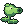
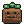

A garden-defense fable
Verdane
The Graft Journal
Grandmother Wren's garden is the last green thing on the lane. Plant its defenders, graft one onto another, and hold the rows until the horde gives up.
-
01 · Plant
Pick a seed packet, then tap a lawn tile. Sunsprouts pay for everything else.
-
02 · Graft
Drop one plant onto another to fuse them into a stronger graft.
-
03 · Defend
Hold every row. Mowers are your last line — each one only saves you once.